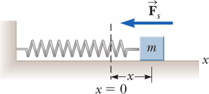
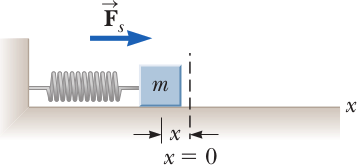

Hooke’s law
Let us study the phenomenon with reference to a spring of Fig. 3.1. When it is not stressed by a force, its length is called rest length or natural length is h. We choose a reference axis parallel to the bar directed outside with the origin in its free end. When we apply a force Fa (a for applied) the extreme end moves and a new equilibrium state is reached. This means that the spring has reacted by developing a force, say F, equal and opposite to Fa. The deformation, namely the difference between the actual and original shapes is, in this, case, a change in the length of the bar. With the chosen co-ordinate, the infinitesimal change dx, is positive for lengthening, negative shortening. The x component of the force developed by the spring is in the positive x direction in case of compression, negative in case of stretching. The magnitude of the force exerted by the spring, Fs, increases with the deformation and is experimentally found to be, for not too large deformations, proportional to the deformation x, namely
Fs(x) = −kx
The constant k is called elastic constant or spring constant. It is a property of the material characterizing its stiffness. Its physical dimensions are a force divided by a length, its units are the newton per meter (N/m).
The proportionality between force and lengthening was experimentally discovered by Robert Hooke (1635–1703) in 1676 and Eq. (3.1) is called Hooke’s law.
|  | When the block is displaced to the right of equilibrium, the force exerted by the spring acts to the left. |
|  | When the block is displaced to the right of equilibrium, the force exerted by the spring acts to the left. |
|  | When the block is displaced to the left of equilibrium, the force exerted by the spring acts to the right. |
He made it public in a curious way. Initially he challenged his colleagues with the anagram “ceiiinosssttuv”. Two years later, considering that nobody had solved the quiz, he gave the solution: “ut tensio, sic vis” (as is the stretch so is the force). The Hooke’s law is very simple and very useful. However, it is not exact, but approximate. Let us study the phenomenon more precisely. We apply to the extreme of the bar a force of increasing and known values of intensity. At equilibrium, these are equal to the magnitude of the force developed by the spring. For each value we measure the deformation, both for extension (positive deformation) and compression (negative deformation). Plotting the results in a diagram we usually find the behavior of Fig. 3.2. For small enough values the dependence of the force on the deformation is linear, Hook’s law holds. If the force is too large however, the deformation, in the case of metals we are considering, is larger than foreseen by the Hook law in compression, smaller in extension (we shall understand
Springs are familiar objects that have many applications, ranging from push-button switches on electronic components, to automobile suspension systems, to mattresses. In use, they can be stretched or compressed. For example, the top drawing in Figure 1 shows a spring being stretched. Here a hand applies a pulling force FxApplied to the spring. The subscript x reminds us that FxApplied lies along the x axis (not shown in the drawing), which is parallel to the length of the spring. In response, the spring stretches and undergoes a displacement of x from its original, or “unstrained,” length. The bottom drawing in Figure 10.1 illustrates the spring being compressed. Now the hand applies a pushing force to the spring, and it again undergoes a displacement from its unstrained length.
Experiment reveals that for relatively small displacements, the force FxApplied required to stretch or compress a spring is directly proportional to the displacement x, or FxApplied ∝ x. As is customary, this proportionality may be converted into an equation by introducing a proportionality constant k
FxApplied = kx
The constant k is called the spring constant, and Equation 10.1 shows that it has the dimensions of force per unit length (N/m). A spring that behaves according to FxApplied = kx is said to be an ideal spring. Example 1 illustrates one application of such a spring.
Sometimes the spring constant k is referred to as the stiffness of the spring, because a large value for k means the spring is “stiff” in the sense that a large force is required to stretch or compress it. Conceptual Example 2 examines what happens to the stiff ness of a spring when the spring is cut into two shorter pieces.
To stretch or compress a spring, a force must be applied to it. In accord with Newton’s third law, the spring exerts an oppositely directed force of equal magnitude. This reaction force is applied by the spring to the agent that does the pulling or pushing. In other words, the reaction force is applied to the object attached to the spring. The reaction force is also called a “restoring force,” for a reason that will be clarified shortly. The restoring force of an ideal spring is obtained from the relation FxApplied = kx by including the minus sign required by Newton’s action–reaction law, as indicated in the following Equation known as Hooke’s law
Fx = −kx
where k is the spring constant and x is the displacement of the spring from its unstrained length. The minus sign indicates that the restoring force always points in a direction opposite to the displacement of the spring from its unstrained length.
Excercse 1. Di quanto si allunga una molla di costante k sottoposta a due forze uguali ed oppose?
Solution. La situazione è la seguente: applicando la forza F ad un'estremità, dato che la molla non accelerà a causa del blocco che la tiene ferma e che esercita la forza Fv.
L'elongazione sarà dunque F/k = Δx. ■